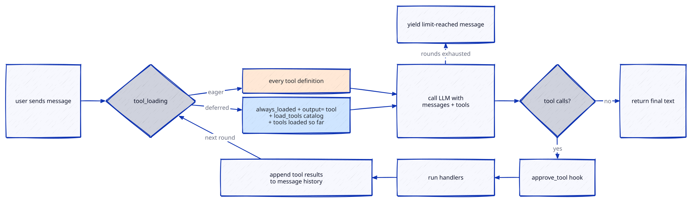
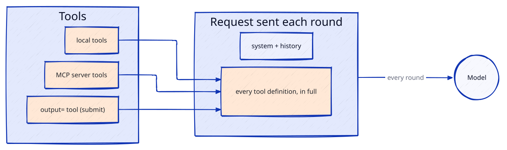
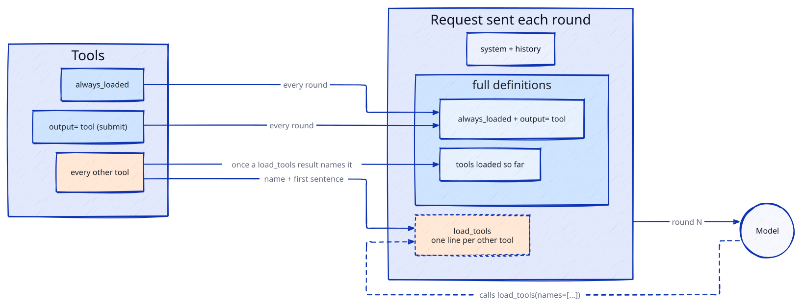

Agents
AgentSession is the agentic loop built on top of the unified chat interface. Given a client, a system prompt, and zero or more tools, it repeatedly calls the LLM, dispatches any tool calls the model requests, feeds the results back, and keeps going until the model produces a plain text answer (or a round limit is hit).
The loop

Each iteration of the loop is called a round. Tool lists are re-read at the top of every round, so MCP servers that emit notifications/tools/list_changed (and refresh McpStreamable.tools / McpStdio.tools in place) get picked up without restarting the session. Which definitions a round sends depends on tool_loading (see Deferred tool loading).
With output= set (see Typed answers), the round limit and a text answer without a tool call both raise OutputError instead of yielding a limit-reached message. "run handlers" above runs each handler wrapped by the on_tool context manager, if set.
A text run never raises on those: an empty answer yields "(no response)" and the round limit a limit-reached message, both as text. session.stop_reason tells them apart from a real answer once the run is over: "answer", "empty" or "round_limit" (None before the first run, while one is in flight, and after a run that raised, such as a typed run's OutputError).
Quick start
from padwan_ai import AgentSession, LLMClient, McpStdio
async with AgentSession(
client=LLMClient(model="gpt-4o"),
mcp_tools=[McpStdio(command="uvx", args=["weather-mcp"])],
system="You are a weather assistant.",
) as session:
text = await session.send("What's the weather in Paris?")
print(text)
Two entry points, depending on whether you want the response streamed:
await session.send(user_input)— returns the complete text as a string.async for chunk in session.stream(user_input)— yields text chunks as the model produces them. Tool calls are silent on the stream; observe them viaon_tool.
user_input is plain text or a list[ContentPart] for multimodal input (text + images).
Tools: individual or whole transports
mcp_tools accepts a heterogeneous list of McpTool and McpTransport (i.e. McpStreamable / McpStdio) instances. This is the main ergonomic win over managing transports by hand:
from padwan_ai import AgentSession, LLMClient, McpStdio, McpStreamable, McpTool
weather_tool = McpTool(
name="get_weather",
description="Return current weather for a city.",
input_schema={"type": "object", "properties": {"city": {"type": "string"}}},
handler=lambda args: {"city": args["city"], "temp": 22, "sky": "sunny"},
)
async with AgentSession(
client=LLMClient(model="gpt-4o"),
mcp_tools=[
weather_tool, # local definition
McpStdio(command="uvx", args=["filesystem-mcp", "/home/me/docs"]), # subprocess
McpStreamable(url="https://tools.example.com/mcp", token="sk-..."), # remote
],
) as session:
text = await session.send("Summarize the README and check the forecast.")
On __aenter__ the session enters every transport that isn't already open (via an AsyncExitStack) — a transport passed in already open is only pinged, so the session won't tear it down on exit — then pings each one to prove the connection is live, and fires the optional on_mcp_connect callback with the transport instance. on_mcp_connect may be sync or async; an async callback is awaited. Every transport the session entered is torn down in LIFO order on exit — even if one of them fails to initialize or ping.
Name collisions
If two tools end up with the same name (e.g. two MCP servers both expose search), AgentSession auto-prefixes the colliding transports with their auto_prefix — a name derived from the transport's identity (URL host for McpStreamable, args[0]/command basename for McpStdio) — unless the transport already has an explicit name_prefix set, which always wins. Local McpTool instances are never auto-prefixed. If a collision remains after auto-prefixing (two local tools sharing a name, two transports with the same derived prefix, or an explicit prefix that still collides), AgentSession raises ValueError.
Tools from typed functions
Writing a JSON Schema by hand for every local tool gets old.
tool() builds an McpTool from a typed async function:
- the signature is the schema
- the docstring the description
- the arguments the model sends are validated before the function runs
Validation needs either msgspec or pydantic installed (neither is a dependency
of padwan-ai).
from padwan_ai.tools import tool
async def get_weather(city: str, unit: str = "celsius") -> dict:
"""Return current weather for a city."""
return {"city": city, "temp": 22, "unit": unit}
weather_tool = tool(get_weather) # `city` required, `unit` optional
Picking the validator
With no validator=, tool() follows the annotations: a msgspec.Meta constraint
or Struct type picks msgspec, a pydantic.Field constraint or BaseModel type
picks pydantic.
from typing import Annotated
import msgspec
class Ref(msgspec.Struct):
id: int
name: str
async def search(
query: str, limit: Annotated[int, msgspec.Meta(ge=1, le=10)] = 5
) -> list[Ref]:
"""Search the references by name."""
return [Ref(id=1, name=query)]
search_tool = tool(search) # `limit` carries minimum/maximum in the schema
from typing import Annotated
import pydantic
class Ref(pydantic.BaseModel):
id: int
name: str
async def read(ref_id: Annotated[int, pydantic.Field(ge=1)]) -> Ref | None:
"""Read one reference."""
return Ref(id=ref_id, name="EXCAVATOR 20-22T")
read_tool = tool(read) # the model is dumped to JSON data
A signature of plain types uses the only library installed and raises when both
are (pydantic is often pulled in by another SDK). Pass validator= to choose, or
any object implementing ToolValidator to plug in another library:
tool(get_weather, validator="msgspec")
# MyValidator implements compile(name, fields), adapt(cls) and dump(result)
tool(get_weather, validator=MyValidator())
Malformed arguments raise the chosen library's ValidationError inside the handler,
which AgentSession reports to the model as a tool error like any other exception.
The other library's constraint metadata is ignored. Results are dumped with
msgspec.to_builtins / pydantic_core.to_jsonable_python, so structs, models and
dataclasses reach the model as plain JSON data; a result the chosen library cannot
serialise is reported as a tool error.
Typed answers
An agent that must end on data, not prose, sets output=AgentOutput(cls) and calls run() instead of send().
The model sees one extra tool, submit (rename it with AgentOutput(tool=)), whose parameters are the answer's JSON Schema; the loop ends when a call to it validates, and run() returns the instance.
from typing import Literal
import msgspec
from padwan_ai import AgentOutput, AgentSession
class Triage(msgspec.Struct):
priority: Literal["low", "normal", "urgent"]
team: str
summary: str
async with AgentSession(
client=client, mcp_tools=[search_tool], output=AgentOutput(Triage)
) as session:
triage = await session.run("Checkout returns a 500 since 9am, payments are blocked")
run() is typed: AgentSession(output=AgentOutput(Triage)) is an AgentSession[Triage], so triage is a Triage for the type checker too.
The answer class is a msgspec.Struct or a pydantic.BaseModel, validated by its own library through the same backends as tool().
An invalid submit (a failed validation, or arguments that are not JSON) goes back to the model as the tool result, with the error, up to AgentOutput(max_repairs=) times (1 by default); one more failure raises OutputError. A text answer without submit, or the round limit, raise OutputError too: a typed run never returns prose. OutputError.reason says which of the three it was ("invalid_answer", "text_answer" or "round_limit"), .attempts how many invalid submit calls were made, and .details the validation error or the model's text.
The first accepted answer, or the exhausted repair budget, settles the run: a second submit in the same round is answered with an error and ignored. Other tools called alongside submit still run (their results are recorded, the model just gets no further round). submit is dispatched like any tool, so approve_tool and on_tool see it; a denial doesn't consume a repair — the model may call submit again in a later round, and the run only hits the round limit if every attempt is denied.
Configuration
AgentSession(
client=..., # any ChatClient — an async context manager with stream_chat() (e.g. LLMClient(model=...) or a ScriptedClient in tests)
system=None, # system prompt, stored in ConversationState
mcp_tools=[], # McpTool | McpTransport instances
max_tool_rounds=5, # round cap; None = unbounded (use with care)
max_tool_result_chars=8_000, # truncate tool results sent to the LLM; None = no limit
execution="sequential", # "sequential" or "parallel"
tool_loading="eager", # "deferred" = a load_tools catalog instead of every definition — see below
always_loaded=(), # public tool names sent in full when deferred
compact_after=None, # input tokens of the last call above which older history is compacted — see below
keep_recent_rounds=2, # rounds a compaction never touches
compactor=ElideToolResults(), # how older history is rewritten
on_tool=None, # (ToolCallContext) -> context manager wrapping the dispatch
on_tool_error=None, # custom error formatter — see below
approve_tool=None, # pre-execution hook returning bool | Awaitable[bool]
on_mcp_connect=None, # fired per MCP transport after entering + pinging
extra_params=None, # extra fields merged verbatim into every request body
session_id=..., # auto-generated; override to resume a saved session
store=None, # optional ConversationStore for persistence
output=None, # AgentOutput(cls, ...) for a typed answer through run() — see above
)
Deferred tool loading
By default (tool_loading="eager") every round resends every tool definition. With many tools (a few MCP servers easily make 20k tokens of JSON schemas) that is most of each request. tool_loading="deferred" sends instead:
- the
always_loadedtools and theoutput=tool, in full; - a
load_toolstool whose description lists every other tool, one line each (name: first sentence of its description); - the tools loaded so far, in load order.


session = AgentSession(
client=llm,
mcp_tools=[github, grafana],
tool_loading="deferred",
always_loaded=("plan",),
)
The model calls load_tools(names=[...]); the result lists what was loaded and the closest matches for unknown names, and the next round carries those definitions. Only load_tools results load a tool, and they stay in session.messages, so a saved and restored session keeps its loaded tools. A loaded tool that later leaves the registry is no longer sent. A call to a tool that was never loaded still runs but loads nothing.
Each load adds definitions to the request, which invalidates the provider's prompt cache from that point once; the catalog text itself does not change while the registry is the same. load_tools goes through approve_tool and on_tool like any other tool, and is a reserved name in deferred mode.
What it saves, measured on one run of glm-5.3 with 33 tools (GitHub and Grafana MCP servers, about 23k tokens of definitions) and the same prompt in both modes. Input tokens are as the provider reported them; the model's path varies from run to run, so read the shape, not the exact numbers.
Input tokens sent so far, after each call (hover or use the arrow keys for each call's numbers):
| Call | Eager | Deferred | Deferred sends |
|---|---|---|---|
| 1 | 18,582 | 2,749 | always_loaded + the catalog; the model calls load_tools |
| 2 | 23,351 | 4,506 | + the 3 loaded Grafana tools |
| 3 | 32,719 | 4,628 | |
| 4 | 9,318 | ||
| Total | 74,652 | 21,201 −72% | one more call than eager |
Deferred was faster as well. Over 3 runs of each mode in the same setup, the median send() took 14.0 s with deferred and 21.3 s with eager: deferred made one more call (5 against 4), but each call was smaller and came back sooner.
Eager stays the default because deferred adds:
- an extra round, in which the model calls
load_tools(one call can load several tools). That round resends the whole history once more, and every later request still carries the catalog, theload_toolsdefinition and the full definitions of what was loaded. Deferred only saves the definitions of tools the model never loads. With a handful of small tools, most of which a task ends up using, that saving is smaller than the extra round: with 5 small tools and a task needing 4 of them, deferred sent 54% more input tokens than eager (median of 3 runs: 1,644 against 1,068, in 3 calls against 2); - tool choice from one-line descriptions, which weaker models make less reliably;
- a prompt cache restart at each load, since each load changes the tool list.
Switch to deferred when tool definitions are a large share of each request, typically with several MCP servers. To help the model pick the right tools from the catalog:
- put the tools most tasks start with in
always_loaded, so the common path needs no load; - make the first sentence of each tool description say what it does and when to use it: that sentence (up to 120 characters) is the tool's whole catalog line;
- name the tools for a task in the system prompt (
"for metrics, load grafana_query") when you know the workflow.
A mistyped name is not fatal: the load_tools result lists the closest registered names under unknown, so the model can load again with the right one.
History compaction
Every round also resends the whole history. With compact_after set, once the provider reports more input tokens than that for the last call, the history before the last keep_recent_rounds rounds is handed to the compactor, and its output replaces that part in every following request:
from padwan_ai import AgentSession, ElideToolResults
session = AgentSession(
client=llm,
mcp_tools=[github, grafana],
compact_after=40_000,
keep_recent_rounds=2,
compactor=ElideToolResults(keep={"spawn"}),
)
The compactor runs again only when the last call is still over compact_after and more rounds have aged out of keep_recent_rounds; in between, every request reuses its output as is, so the provider's prompt cache holds. Set compact_after well above what a request costs with no history (system prompt plus tool definitions), or every round goes over it and the compactor runs every round. session.messages keeps the full history; the compacted part is saved in the snapshot and reset by clear().
ElideToolResults, the default compactor
Tool results are usually most of the history: a query, a file or a page of logs is thousands of characters, while the call that fetched it is a line. ElideToolResults replaces each older tool result with a stub that names the tool and the size it had:
Everything else stays as it is: the user's messages, the model's text, and the tool calls with their arguments. The model can still see what it looked up and in which order, and can call a tool again if it needs a result back. The stub keeps the result's tool_call_id, so every call still has its result.
A result is left whole when:
- its tool is named in
keep(ElideToolResults(keep={"spawn", "read_plan"})): use it for results the model keeps referring to, like a plan or a sub-agent's report; - it is shorter than its stub would be;
- it is already a stub from an earlier compaction, so the size it shows stays the original one.
Here is what the model is sent after a compaction in a trip of four grafana_query rounds, with keep_recent_rounds=2:
| # | Message | session.messages |
Sent to the model |
|---|---|---|---|
| 1 | user | dig into the api pod |
unchanged |
| 2 | assistant | calls grafana_query |
unchanged |
| 3 | tool | 8,012 chars of metrics | [elided: 8012 chars of grafana_query result] |
| 4 | assistant | calls grafana_query |
unchanged |
| 5 | tool | 8,012 chars of metrics | [elided: 8012 chars of grafana_query result] |
| 6 | assistant | calls grafana_query |
unchanged (last 2 rounds) |
| 7 | tool | 8,012 chars of metrics | unchanged |
| 8 | assistant | calls grafana_query |
unchanged |
| 9 | tool | 8,012 chars of metrics | unchanged |
compacted last keep_recent_rounds rounds, sent whole
It costs no model call and gives the same output for the same history, but what an elided result said is gone from the model's view: only the fact that it existed remains. When the model needs the gist of old results, summarise them instead.
Custom compactors
A compactor implements the Compactor protocol: async def compact(self, messages) -> list[ChatMessage]. Subclassing Compactor lets the type checker verify the signature; any object with that method works too. messages is the part being compacted (the system prompt is never included), and the returned list replaces it. This one has a cheaper model summarise the older rounds, keeping the user's first message:
import json
from collections.abc import Sequence
from padwan_ai import AgentSession, ChatMessage, Compactor, LLMClient, LLMClientBase
class Summarise(Compactor):
"""Replace older rounds with a summary written by another model."""
def __init__(self, client: LLMClientBase) -> None:
self.client = client
async def compact(self, messages: Sequence[ChatMessage]) -> list[ChatMessage]:
transcript = json.dumps(list(messages[1:]), ensure_ascii=False)
response, _ = await self.client.complete_chat(
[
{
"role": "user",
"content": "Summarise this agent transcript: what was looked up, "
f"what was found (keep the numbers), what is still open.\n{transcript}",
}
]
)
summary = response["content"] or ""
return [
messages[0],
{"role": "user", "content": f"Earlier rounds, summarised:\n{summary}"},
]
summariser = LLMClient(model="mistral-small-latest")
session = AgentSession(
client=llm,
mcp_tools=[github, grafana],
compact_after=40_000,
compactor=Summarise(summariser),
)
async with summariser, session:
answer = await session.send("dig into the api pod")
A later compaction gets the earlier summary back as part of messages, so it summarises the summary and the rounds since. A compactor may drop whole rounds but not half of one: if a tool call and its result no longer pair up, the session raises CompactionError instead of sending the request.
Parallel tool execution
When a single LLM response contains multiple tool calls, execution="parallel" dispatches them via asyncio.gather. Results are still appended to the message history in original call order:
Use the default "sequential" if you care about ordering side effects or want to rate-limit the downstream servers.
Approval hooks
approve_tool runs before every tool dispatch. Return False to block the call — the agent will append {"error": "Tool call denied by approval hook: <name>"} as the result instead of executing the handler. The hook may be sync or async:
def prompt_user(tool, args):
return input(f"Run {tool.name}({args})? [y/N] ").lower() == "y"
session = AgentSession(
client=LLMClient(model="gpt-4o"),
mcp_tools=[...],
approve_tool=prompt_user,
)
Error handling
By default, exceptions raised inside a tool handler are caught, formatted as JSON {"error": str(exc)}, and appended as the tool result so the model can recover. Each failure is logged as one WARNING line on the padwan_ai logger; its traceback is attached only when that logger is enabled for DEBUG. Override on_tool_error to customize:
def format_error(tool, args, exc):
return f"[{tool.name} failed: {type(exc).__name__}: {exc}]"
session = AgentSession(
client=...,
mcp_tools=[...],
on_tool_error=format_error,
)
Observation
on_tool receives a ToolCallContext(name, args) and must return a context manager wrapped around each tool dispatch. Use it for logging, UI updates, metrics, or span/timer scopes that need to bracket the call:
from contextlib import contextmanager
@contextmanager
def log_call(tc):
print(f"→ {tc.name}({tc.args})")
yield
print(f"← {tc.name} done")
session = AgentSession(..., on_tool=log_call)
For a fire-and-forget side-effect, yield immediately after the action.
Persistence
Conversation state is saved to a store keyed by session id. A store is sync (ConversationStore) or async (AsyncConversationStore), whichever its backend needs; the session awaits it only when it is async.
import json
from pathlib import Path
from padwan_ai import ConversationSnapshot
class JsonStore:
def __init__(self, path: Path):
self.path = path
def save(self, session_id: str, snapshot: ConversationSnapshot) -> None:
(self.path / f"{session_id}.json").write_text(json.dumps(snapshot))
def load(self, session_id: str) -> ConversationSnapshot:
file = self.path / f"{session_id}.json"
if not file.exists():
raise LookupError(session_id)
return json.loads(file.read_text())
import json
import asyncpg
from padwan_ai import ConversationSnapshot
class PgStore:
def __init__(self, pool: asyncpg.Pool):
self.pool = pool
async def save(self, session_id: str, snapshot: ConversationSnapshot) -> None:
await self.pool.execute(
"INSERT INTO agent_sessions (id, snapshot) VALUES ($1, $2)"
" ON CONFLICT (id) DO UPDATE SET snapshot = EXCLUDED.snapshot",
session_id,
json.dumps(snapshot),
)
async def load(self, session_id: str) -> ConversationSnapshot:
row = await self.pool.fetchval(
"SELECT snapshot FROM agent_sessions WHERE id = $1", session_id
)
if row is None:
raise LookupError(session_id)
return json.loads(row)
load() must raise LookupError for a missing snapshot — that's the only exception AgentSession.load() treats as "no snapshot yet" and starts fresh from; anything else propagates.
MemoryStore and AsyncMemoryStore are ready-made stores that keep snapshots in a dict, for tests and single-process apps; anything that must outlive the process needs its own store.
Persist after a turn completes:
async with AgentSession(
client=LLMClient(model="gpt-4o"),
store=JsonStore(Path("./sessions")),
session_id="user-42",
system="...",
) as session:
await session.send("Hi!")
await session.save()
Resume in a later process with the classmethod constructor, which reads the snapshot before returning the session:
session = await AgentSession.load(
model="gpt-4o",
store=JsonStore(Path("./sessions")),
session_id="user-42",
)
async with session:
await session.send("What were we talking about?")
load() pulls the system prompt and full message history from the snapshot. Pass client= instead of model= when you need a pre-configured or fake client (e.g. in tests).
session_id is optional — omit it to start a fresh session that's still wired up to the store, so a later session.save() lands under an auto-generated id:
session = await AgentSession.load(model="gpt-4o", store=store)
async with session:
await session.send("Hello!")
await session.save() # persisted under session.session_id
How tool results are fed back
When the LLM response contains tool calls, the agent:
- Appends an
AssistantToolMessagewith all tool calls to the history. - Parses each call's arguments from JSON and asks
approve_tool(if set) — sequentially, even inexecution="parallel"mode. Denied calls get{"error": "Tool call denied by approval hook: <name>"}as their result. - Runs the handlers (sequentially or in parallel), each wrapped in the
on_toolcontext manager if set — including denied and unknown-tool calls. - Catches any exception; without
on_tool_errorthe default is JSON{"error": str(exc)}. - Appends a
ToolResultMessageper call, in the original order. - Loops back to the LLM call.
Long tool results are truncated to max_tool_result_chars in the copy sent to the LLM only; the full content is preserved in session.messages for inspection or persistence.
Reading state
session.messages # full ChatMessage list including tool calls + results
session.last_usage # UsageToken from the most recent LLM call
session.total_usage # accumulated usage across all rounds in this session
session.add_user_message(text) appends a user turn without running a round; session.clear() drops all messages. Both are for managing history by hand outside send()/stream().
Testing an agent
padwan_ai.testing.ScriptedClient stands in for any client: it answers each round with the next Step of a script and records what the model would have seen, so a test asserts on the conversation as well as on the outcome (no provider, key or socket needed).
from padwan_ai import AgentSession, McpTool
from padwan_ai.testing import ScriptedClient, Step
# round 1: the model calls a tool, round 2: it answers
client = ScriptedClient(
[
Step(tool_calls=[("get_weather", {"city": "Paris"})]),
Step(text="Sunny in Paris."),
]
)
async with AgentSession(client=client, mcp_tools=[weather_tool]) as session:
assert await session.send("Weather in Paris?") == "Sunny in Paris."
# the tool result went back to the model, and the whole script ran
assert client.requests[1].messages[-1]["role"] == "tool"
assert client.remaining == 0
Step(usage=...) overrides the default token counts for that round; Request.tool_names is a shortcut for the names of the tools offered that round (derived from Request.tools).
A script that runs out raises AssertionError on the next round: a test that drifts from its script fails loudly instead of hanging on an empty answer. complete_chat is scripted the same way for non-streaming callers.
Limitations
- No mid-stream approval.
ChatStream.tool_callsis only populated after iteration completes, soapprove_toolruns once all tool calls for a round are known. - Untyped tool results. Results are normalized to strings (MCP wire format, plain strings, JSON fallback).
- No per-call cancellation. You can cancel the whole
session.send()/session.stream()task, but not an individual in-flight tool call.